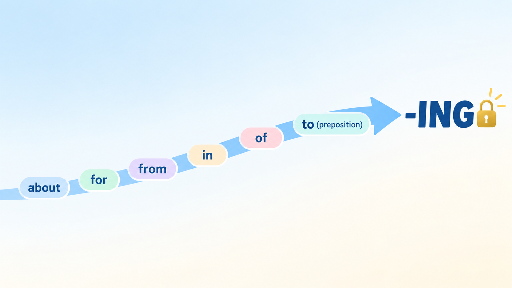
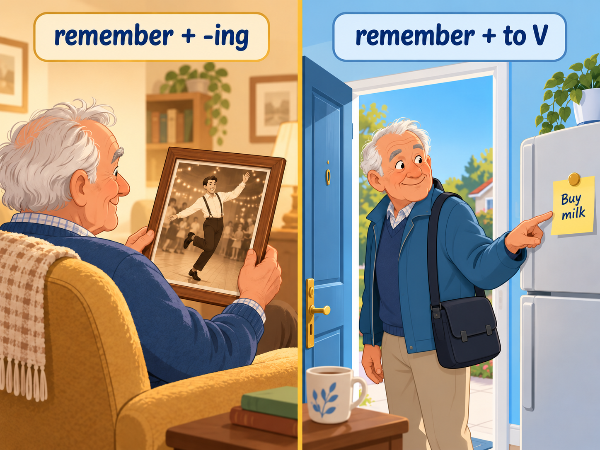
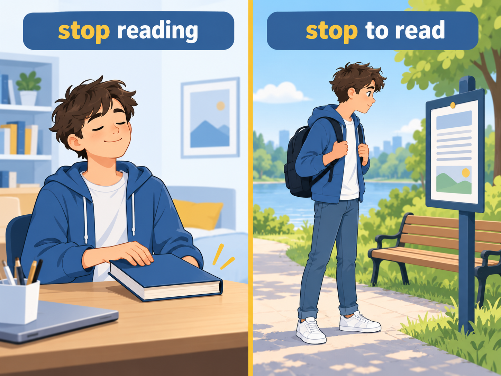
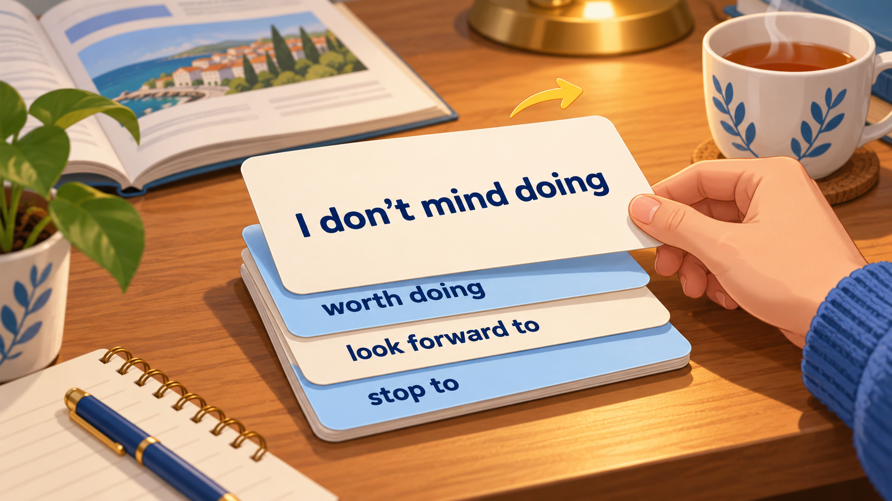

После какого глагола ставим -ing, после какого — to do, а когда можно оба и это меняет смысл?
11 правил + 12 упражнений подряд. Источники: Афанасьева/Михеева «English VIII» Unit 6 (стр. 252-262) и Destination B1 Unit 37 (Mann & Taylore-Knowles).
Кликни по карточке — откроется русский перевод. Кликни на 🔊 — услышишь слово. Это навигация, не упражнение.
A · V + -ingB · V + to-infC · V + bare infD · both (same meaning)E · both (DIFFERENT meaning)
01Rule 1 · V + -ing (gerund)
Эти глаголы требуют после себя форму на -ing (gerund). Запомни блок — он фиксированный.
enjoy, mind, finish, stop, keep, avoid, suggest, practise, admit, deny, miss, risk, imagine, consider, can't help, can't stand + V-ing.
I enjoy reading detective stories. · Do you mind opening the window? · She finished writing her essay. · Keep smiling!
Также после go для активностей: go dancing, go camping, go shopping, go fishing.
После have + N: have fun playing, have difficulty reading, have trouble finding, have a good time working.
NBЭто не Present Continuous. Здесь -ing — это существительное (герундий), а не длящееся действие.
Exercise 1 · Put the verb in brackets into the correct -ing form.
02Rule 2 · V + to-infinitive
Другой закрытый список: эти глаголы требуют to + V.
want, decide, promise, agree, offer, hope, plan, refuse, learn, choose, manage, arrange, afford, ask, expect, seem, pretend, threaten, fail, hesitate + to V.
I decided to study abroad. · He promised to help me. · We can't afford to buy a new car. · She pretended not to see me (отрицание ставим перед to).
Pattern
Example
V + to V
It's beginning to rain.
N + to V
I told her about my decision to leave.
Adj + to V
His accent is not easy to understand.
V + wh + to V
I wonder who to invite. Tell me where to go.
Why (not) + V
Why go there so late? Why not ask Susan to help?
Exercise 2 · Complete with suitable verb in the correct form (to V).
03Rule 3 · Preposition + -ing (always!)
После любого предлога (in / of / for / about / to / from / on / at / by…) — только -ing. Это железное правило.
Табличка словосочетаний из Афанасьевой 8 (p252):
+ about / of
+ for
+ from
+ in
+ of
+ to
complain, dream, talk, think
apologize, blame, forgive, thank
keep smb, prevent smb, stop smb
believe, be interested, participate, succeed
be capable, be guilty, be tired, take care
look forward, object, be used
I'm looking forward to seeing you. · He apologized for being late. · She's good at swimming. · We're tired of waiting.
TRAPlook forward TO, be used TO, object TO — здесь to это предлог, а не частица инфинитива! → всегда -ing: I look forward to meeting you (НЕ to meet).

Exercise 3 · Insert the right preposition (из Афанасьевой Ex 21).
Exercise 4 · Choose the item that is true about you or complete freely (из Афанасьевой Ex 22).
04Rule 4 · V + bare infinitive (without to)
Короткий закрытый список глаголов, после которых идёт голый инфинитив (без to).
Модальные: can, could, may, might, must, should, will, would, shall + V You must go now. · I can swim.
let / make somebody V Let me help you. · Mum made me clean my room.
see / hear / feel / watch / notice somebody V (полное действие) I saw her cross the street. · We heard him sing.
had better / would rather + V You'd better leave now. · I'd rather stay home.
NBВ пассиве после be made / be seen / be heard возвращается to: She was made to clean the room.
Exercise 5 · Choose the correct form.
05Rule 5 · Both forms, SAME meaning
С этими глаголами разницы нет — говори как хочешь.
like, love, hate, prefer, start, begin, continue, bother, intend + V-ing или + to V — смысл одинаковый.
I like swimming = I like to swim. · It started raining = It started to rain.
STYLEВ would like / would love / would hate / would prefer — только to V: I'd like to go home (НЕ going).
Exercise 6 · Both answers OK? Mark ✓. Only one? Choose it. Pay attention to would!
Отдельная конструкция, которую легко потерять. Когда у действия другой субъект, перед -ing вставляем притяжательное.
Structure
Example
mind + Ving
Do you mind opening the window? (ты сам откроешь)
mind + me/my + Ving
Do you mind me / my opening the window? (я открою — ты не против?)
mind + him/his / her / their + Ving
Do you mind his / her / their opening the window?
blame X for Y's Ving
Polly blames Patrick for their being late.
Из Афанасьевой p253: Polly and Alice are late. They blame Patrick for this. → Polly and Alice blame Patrick for their/them being late.
Exercise 7 · Rewrite using for + possessive + Ving (из Афанасьевой Ex 23).
07Rule 7 · offer vs suggest
Оба переводятся как «предлагать», но ведут себя по-разному. Классическая ловушка B1 ЕГЭ.
offer
suggest
to offer sth — объект/услугу She offered me a cup of coffee.
to suggest sth — идею/план They suggested a trip to Pskov.
to offer to do sth — предложить сделать самому Mike offered to take care of my garden.
to suggest Ving — предложить, что кто-то сделает (возможно вместе) Mike suggested going to the cinema.
to suggest (that) smb should do sth I suggest that you should join our group for English classes.
KEYЕсли делаешь ты сам → offer to do. Если идея/план (возможно для кого-то другого) → suggest Ving / suggest that smb should do. suggest to do не существует!
Exercise 8 · Complete with offer or suggest (из Афанасьевой Ex 29).
08Rule 8 · used to vs be used to
Две разные конструкции с похожим видом. Путаются.
used to do
be / get used to doing
раньше делал регулярно, сейчас нет (прошлая привычка)
привык к (имею привычку, мне нормально)
I used to play tennis when I was young.
I'm used to getting up early.
We used to live in Moscow.
She got used to speaking English all the time.
TESTМожешь ли сказать «раньше…, а сейчас нет»? → used to do. Можешь сказать «мне привычно»? → be used to doing.
Exercise 9 · Fill with used to or be/get used to + the verb in brackets (из Афанасьевой Ex 31).
09Rule 9 · remember / forget — Ving vs to V
Один из главных трюков B1. Смысл меняется кардинально.
+ Ving (прошлое)
+ to V (долг/необходимость)
remember/forget doing = помнить / забыть, что уже сделал
remember/forget to do = помнить / забыть сделать что-то (то, что должен сделать)
I remember visiting the Tower of London years ago.
Did you remember to buy the medicine?
We'll never forget meeting the Queen.
Don't forget to lock the door!
LOGICVing смотрит в прошлое (воспоминание). to V смотрит вперёд (задача, которую нужно сделать).

Exercise 10 · Choose the right form (из Афанасьевой Ex 33).
10Rule 10 · stop — Ving vs to V
Та же логика «меняет смысл», но с глаголом stop.
stop + Ving (бросить)
stop + to V (остановиться, чтобы…)
перестать делать это действие вообще
прервать другое действие, чтобы сделать это
I must stop smoking. (бросить курить)
I stopped to smoke. (остановился, чтобы покурить)
Can't you stop making that awful noise?
Can you stop at the butcher's to buy some meat?
It has stopped raining.
The old man stopped to have a rest.

Exercise 11 · Choose the right form (из Афанасьевой Ex 34).
11Rule 11 · try / mean / regret / go on / need · meaning-change pairs
Остальные глаголы меняющие смысл — из Destination B1 Unit 37.
Verb
+ Ving
+ to V
try
попробовать как опыт/эксперимент Try opening the window. (попробуй — вдруг поможет)
постараться (приложить усилия) I tried to open the window (but it was stuck).
mean
подразумевать, означать Being a teacher means working hard.
намереваться сделать I meant to call you yesterday.
regret
жалеть о прошлом поступке I regret telling him the truth.
«с сожалением сообщаю» (формальное) I regret to tell you we have no vacancies.
go on
продолжать то же действие She went on talking.
перейти к другому делу After the intro, she went on to explain the project.
need
пассивное значение: нужно, чтобы это сделали My car needs washing. = нужно помыть
активное: мне нужно сделать I need to wash my car.
Exercise 12 · Choose the correct form.
★Final Mix · everything together
Все 11 правил вперемешку. Destination B1 Unit 37 style — transformation.
Final · Rewrite each sentence using the word in brackets (B1 Destination style).
★★Flashcards · constructions to memorise
Переворачивай карточки как в Quizlet. На лицевой — конструкция, на обратной — перевод + пример. Пройди все 24 — и ты знаешь каркас.

I don't mind doing
V + -ing
↻ click to flip
— я не против сделать
I don't mind waiting for you.
↻ click to flip back
1 / 24
📦 Vocab Capsule · the whole system in one page
Распечатай эту секцию и держи на столе до следующего урока.